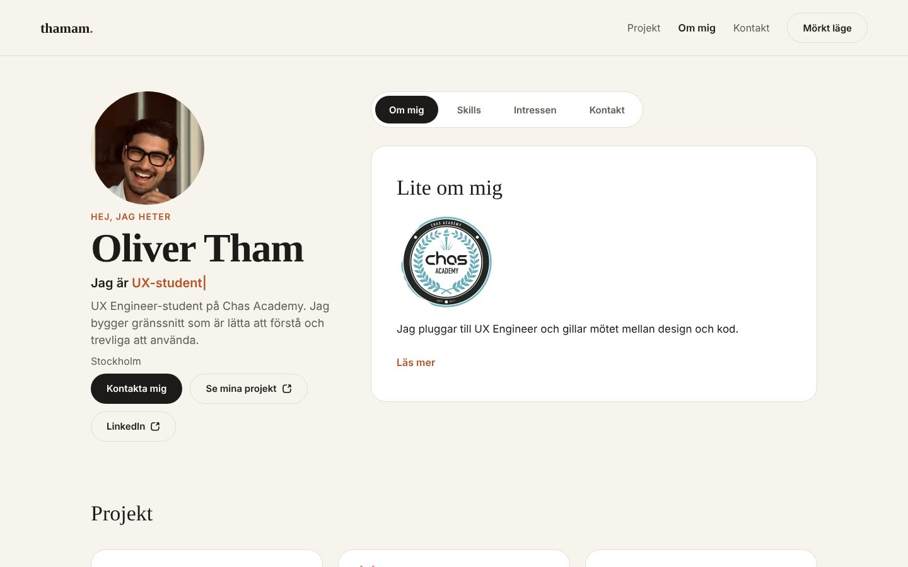
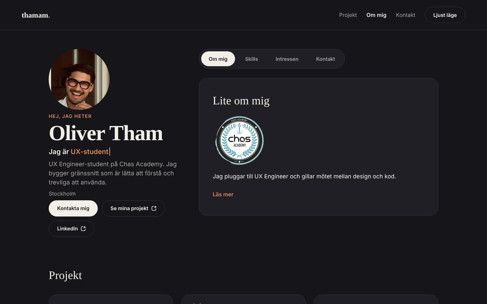
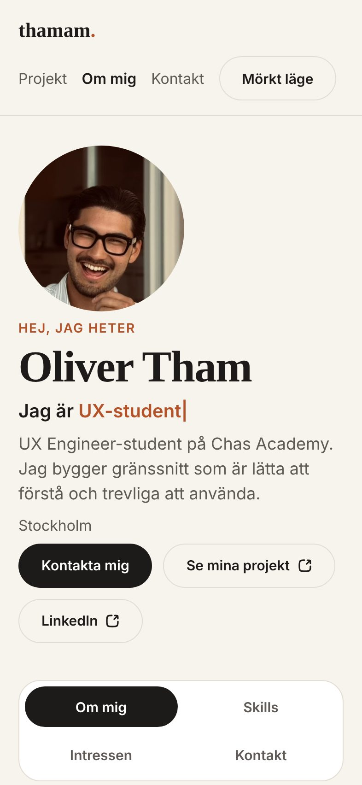

Case study
Om mig / Portfolio
En personlig sajt som började som en skoluppgift och blev min portfolio. Målet var att sajten själv skulle visa vad en UX Engineer gör: tänka på användaren och bygga det ordentligt.
- Roll
- Design & kod (solo)
- Tid
- Hösten 2026
- Verktyg
- HTML, CSS, JavaScript, Git
- Länkar
- Koden på GitHub

Utmaningen
En "om mig"-sida är lätt att göra snygg men svår att göra bra. Jag ville att den skulle fungera för alla: med mus, med tangentbord, på mobil, i mörker och för den som blir illamående av animationer. Samma sida skulle också gå att bygga vidare på när jag gör fler projekt.
Viktiga beslut
-
rem i stället för px
Med rem växer hela layouten med användarens textstorlek i webbläsaren, inte bara texten. Undantaget är tunna kanter (1–3px) som ska se exakt likadana ut överallt.
-
Flikar som fungerar med tangentbord
Fyra flikar i stället för en lång sida. De följer WAI-ARIA-mönstret med
role="tablist",aria-selectedocharia-controls. Piltangenter, Home och End flyttar mellan flikarna, och varje flik går också att nå med Tab. -
Mörkt läge som minns ditt val
Första besöket följer systemets inställning (
prefers-color-scheme). Väljer du själv sparas valet. Alla färger är CSS-variabler, så en klass på<html>byter hela temat. -
Mobil på riktigt
Jag testade på iPhone 15 Pro-bredd (393px). Menyn radbryts, knapparna bryts inte mitt i ord och flikarna blir ett 2×2-rutnät så de går att träffa med tummen.
-
Innehåll som data
Tidslinjen och projektkorten byggs från listor i JavaScript. Ett nytt projekt är ett nytt objekt i listan, ingen ny HTML. Tidslinjen sorterar sig själv efter år.
-
Rörelse med hänsyn
Tidslinjen tonar in när man scrollar och rubriken skrivs ut som en skrivmaskin. Båda stängs av om användaren har valt "minska rörelse" i systemet.
-
Ett formulär som faktiskt skickar
Första versionen sa "Tack!" men skickade ingenting. Nu går meddelandet via Formspree, e-posten valideras, knappen låses medan det skickas och texten ligger kvar om något går fel. Svaret läses upp av skärmläsare via
role="status".


Vad jag lärde mig
Tillgänglighet är mest många små beslut: en roll här, ett attribut där. Men skillnaden märks direkt när man försöker använda sidan med bara tangentbordet. Jag lärde mig också att en kodgranskning hittar saker man själv blivit blind för, som att formuläret aldrig skickade något.